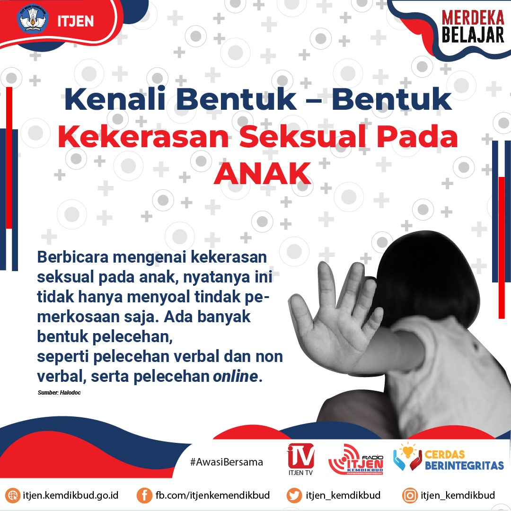
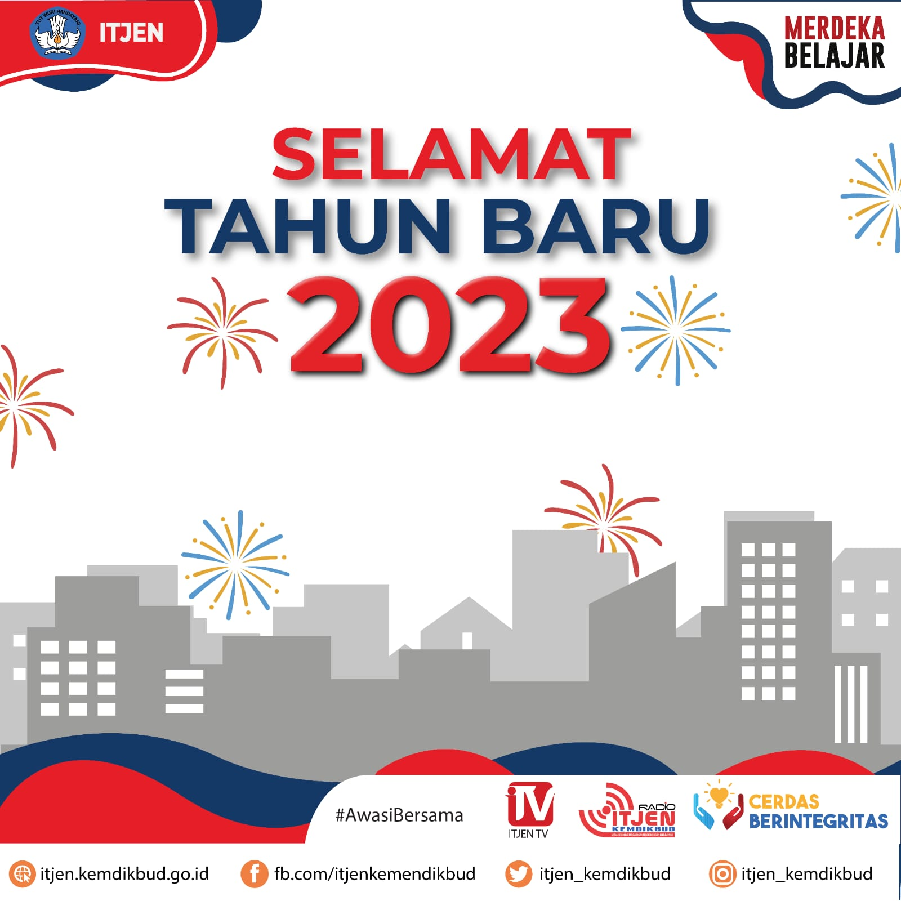
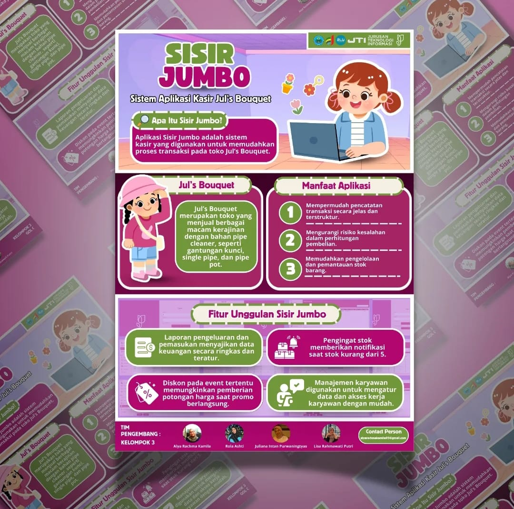
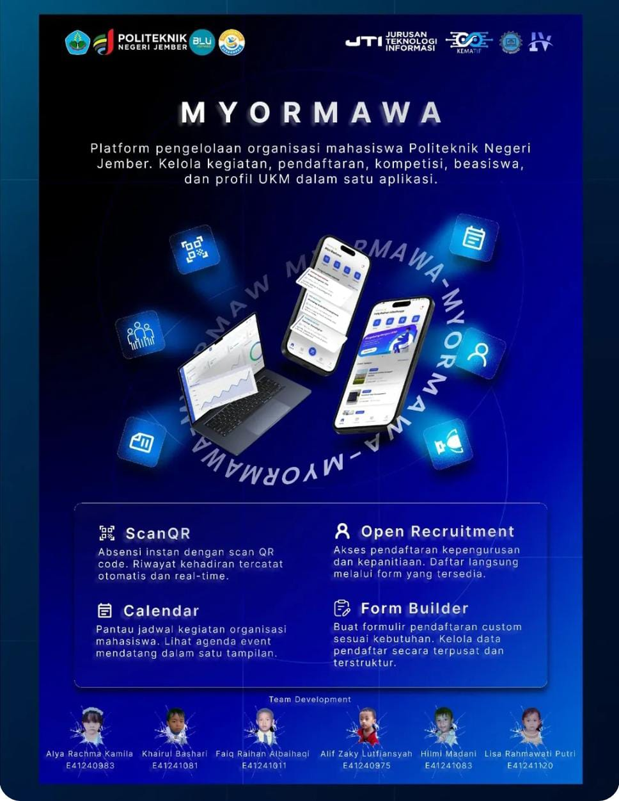

Portofolio





Programmer | UI/UX Designer
Mahasiswa Teknik Informatika yang tertarik pada pengembangan aplikasi, desain UI/UX, dan teknologi digital.
Saya merupakan mahasiswa aktif Program Studi Teknik Informatika jenjang D4 di Jurusan Teknologi Informasi, Politeknik Negeri Jember. Saya memiliki ketertarikan dan kemampuan dalam bidang pemrograman, pengembangan aplikasi, serta desain UI/UX. Selain fokus pada akademik, saya juga aktif dalam kegiatan organisasi dan turut berkontribusi di Himpunan Mahasiswa Jurusan Teknologi Informasi. Saya terbiasa mempelajari hal baru, mampu bekerja dalam tim, serta berkomitmen untuk terus mengembangkan kemampuan dan wawasan di bidang teknologi.